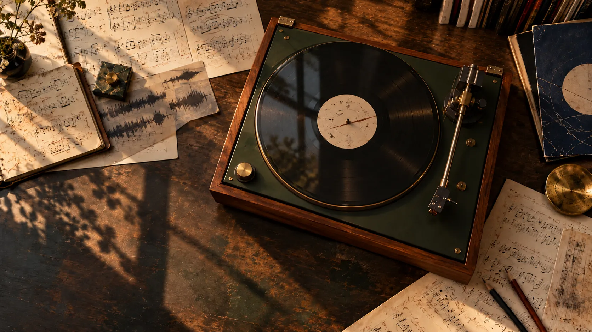

Vol. 02 · WJazzD
Stolen
Moment
Found in the archive
— passages
How it works
Hear the pattern.
See the phrase.
- Pick a pairTwo solos that share a phrase.
- Press playHear both and see the notes line up.
- Go to the recordJump into the recording at that moment.
Matches are leads for your ears, not proof of quotation.